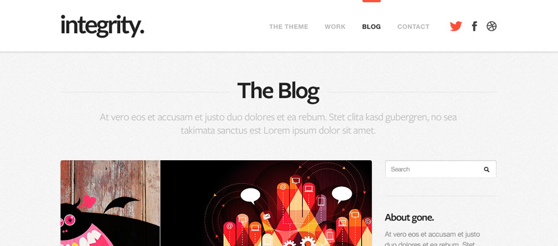

---

layout: global
title: 'Fundamentos CSS'

lesson_title: 'Control de versiones con Git'

---

{% include slides/sublime-tips/sublime-tip-add-theme.html %}


<section>
    <h3>Ejercicio</h3>
    <p>Añade un dropdown en la landing page DecoMAG</p>

    <a href="files/exercises/integrity-wp.zip"></a>
</section>

